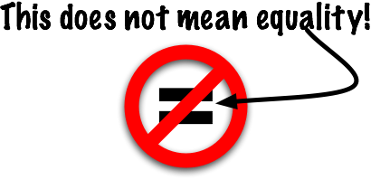

Operators That Test for Equality
This area is not as straightforward as it seems at first.

In the JavaScript language the equal sign " = " is used in assignment statements. In fact, you have already practiced writing assignment statements. Here's an example: yearBirth = 1996; where the variable is yearBirth and the value assigned to it is 1996.
The " = " does NOT mean equal, though. In JavaScript we use other operators to designate various levels of equality. It takes a little time to get used to them, but after a few examples you'll begin to see the importance of the variety of equality operators.
The Equality Operators
| Operator | Function |
== |
Tests whether two expressions are equal |
!= |
Tests whether two expressions are not equal |
=== |
Tests whether two expressions are really equal |
!== |
Tests whether two expressions are really not equal |
Using the Equality Operators
These operators are used in "if" and "while" statements. We'll add those in the next unit but here are some samples showing what they look like.
The sample code on line 02 tests to see if the value in the variable count is EXACTLY equal to 5; whereas, the code on line 06 tests to see if the value in the variable count is EXACTLY not equal to 10. But, rather than getting into the "if" and "while" statements in detail right now...let's look at some basic Boolean Expressions to try to get a better feel for the equality operators.
// Using Equality Operators
if (count === 5) {
// do something
}
while (count !== 10) {
// do something
}
Boolean Expressions
Boolean expressions are just statements that are either true or false.
Does 5 equal 5?
(5 === 5) True!
Does "Homer" equal "Barney"?
("Homer" === "Barney") False!
If a variable named 'count' has a value of 3. What is result of this expression?
(count === 3) True!
How about this?
(100 === "100") ???
We can see the results of an equality test with a simple document.write();
// Displaying a Boolean expression
document.write(5 === 5);
document.write("\n");
document.write("Homer" === "Homer");
Testing for Equality with Type Conversion (==)
The == operator has a trick. It will convert types to match before it does the equality test.
(100 == "100") What will this be? It's true!
The "100" will first be converted to the number 100 and then compared to 100.
// Automatic number conversion
document.write(100 == "100");
It does NOT convert the case of strings
// No case conversion
document.write("Fred" == "FRED");
You can use variables in the test.
// Using variables with equality tests
var count;
var currentNumber;
var enteredName;
var firstName;
firstName = "Fred";
enteredName = "fred";
count = 10;
currentNumber = 10;
document.write(firstName == enteredName);
document.write("\n");
document.write(count == currentNumber);
Testing for Inequality With Type Conversion (!= )
The != operator will convert types and then test to see if the values are not equal. This can be confusing, if the values are not equal then the test returns true.
The 25 will be converted to "25" and then tested for inequality with the "25". Because they are equal the test will return false.
// Not Equal with conversion
document.write("25" != 25);
This expression will return true because 10 is not equal to 11. (Get it?)
// A true example
document.write(10 != 11);
Just convert ("Bob" != "Bill") into a question: "Is 'Bob' different from 'Bill'?" Yes, they are different.
// Not Equal?
document.write("Bob" != "Bill");
Testing for Equality Without Type Conversion (===)
The === operator will not do any conversions, it will just do a strict comparison. If the types don't match then you get false. This is the equality operator that we'll use most of the time.
If they are the same type then it's just the same as ==
// Same as ==
document.write(5 === 5);
But this will now return false.
// Strict comparison
document.write(100 === "100");
Note: This is called "Strict Equality" and is usually what you should use. Only use the non-strict == when you know that's what you want.
It is a course standard that you use === whenever possible, unless directed to do otherwise.
Testing for Inequality Without Type Conversion (!==)
The !== tests for inequality with no type conversion.
This works like != with no type conversion so we often get different results.
// Are they different types? Then it's true.
document.write("25" !== 25); // It's true that "25" is different from 25
For numbers it's just the same as !=.
// Comparing number for inequality
document.write(10 !== 11); // 10 is different from 11
Lab Time
Here's a quick lab just to practice these